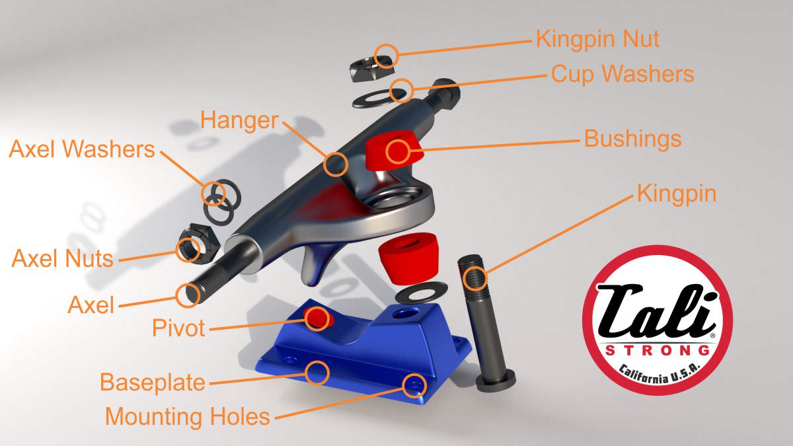
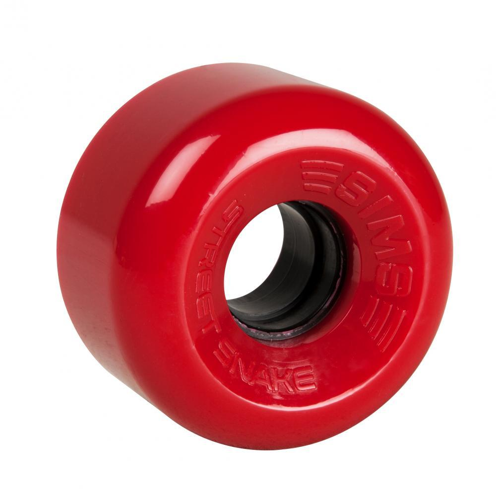
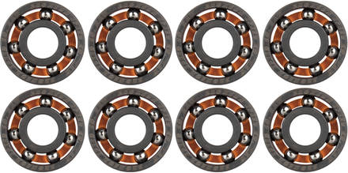

Wheels
The most expensive part of a skateboard is the trucks, but this last the longest.
Trucks are
made up of a few parts: The hanger, baseplate, and bushings. The hanger is the part of the truck with
the axle inside of it and it is the part of the truck that wears down the fastest from doing certain
tricks like grinds. The hanger is attached to the baseplate which is the part of the truck that connects
to the deck using bolts. The base plate has a kingpin, which is a bolt that goes through it that allows
the hanger to connect. There is also a rubber cup inside of the base plate called a pivot bushing, this
helps protect the baseplate from wear from the hanger. There is also bushings that go on the kingpin,
these make it so the trucks can be tightened down without damaging anything. Some bushings are softer
than others to allow the truck to turn easier or harder. There are many different truck brands and they
all have their own geometry for their trucks. Geometry is important because it makes the skateboard turn
and feel a certain way.
Skateboard wheels come in many different shapes, sizes, and hardness levels. Most
wheels are made of urethane. The softer the wheel the easier it is to ride over cracks and pebbles. The
harder the wheel, the easier it is to slide and the faster you go. People want to slide for certain
tricks.
Truck


Bearings
Bearings go inside of a wheel so that the wheel can fit onto the truck axle and turn
efficiently.
